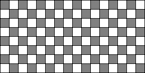

| 18. (a) The N = 3 CA with LDL gives L, all other nbhd configs give D, produces picture (i). Note that the only nbhd configs that appear in (i) are LDL and DLD, so ANY N = 3 CA with LDL gives L and DLD gives D produces picture (i). The other six N = 3 nbhd configs can give either L or D without altering the pattern of (i). Consequently, there are 26 = 64 different N = 3 CA rules that will produce picture (i). |
| (b) Picture (ii) can be generated by no N = 3 or N = 5 CA. For N = 3, all the nbhd congigs in the initial distribution are LLL. This config must always produce a D cell, or always produce a L cell. The checkerboard in later generations is impossible. |
| The same argument applies to N = 5, noting here that every nbhd config in the initial generation is LLLLL. This must always produce a L cell, or always produce a D cell. As with the N = 3 CA, the checkerboard pattern in later generations is impossible. |
| (i) 
(ii) |
Return to Homework 9 Practice.